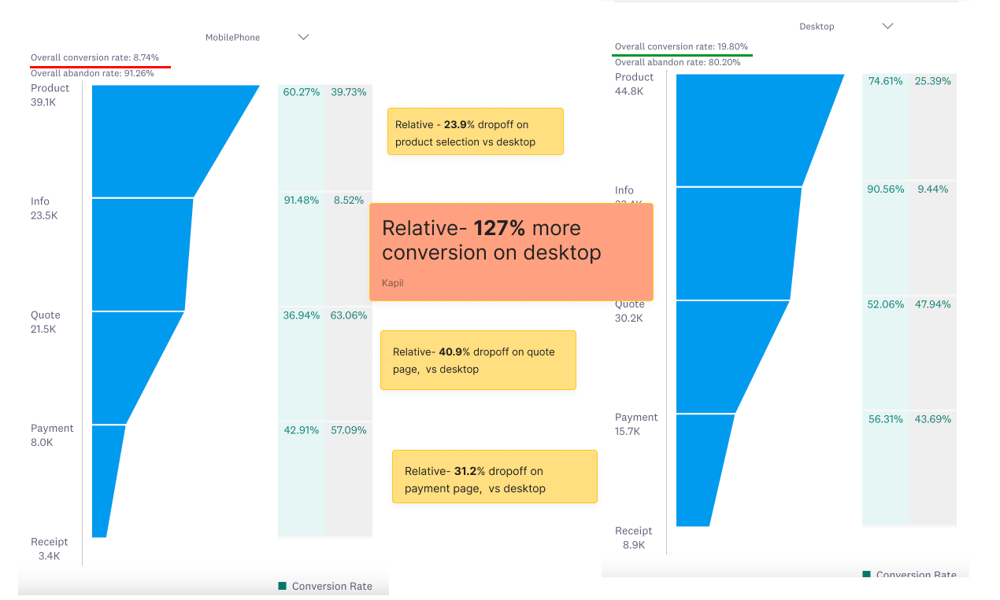
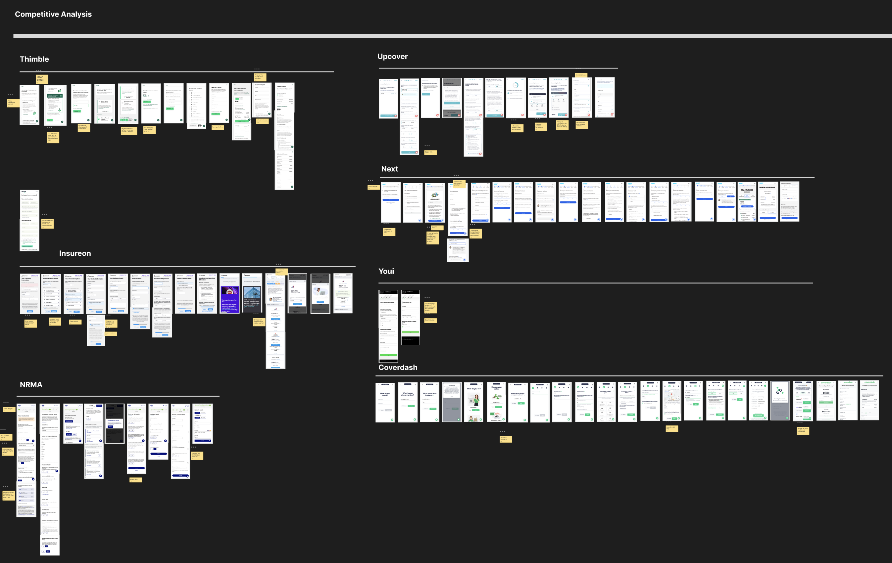
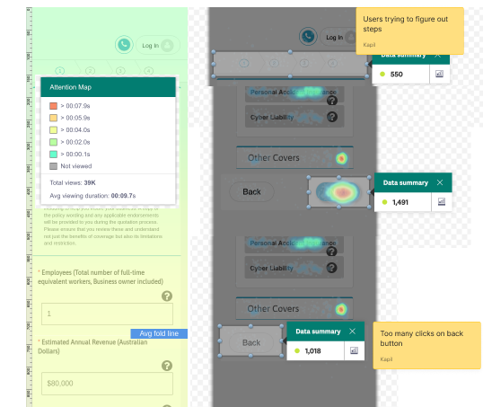
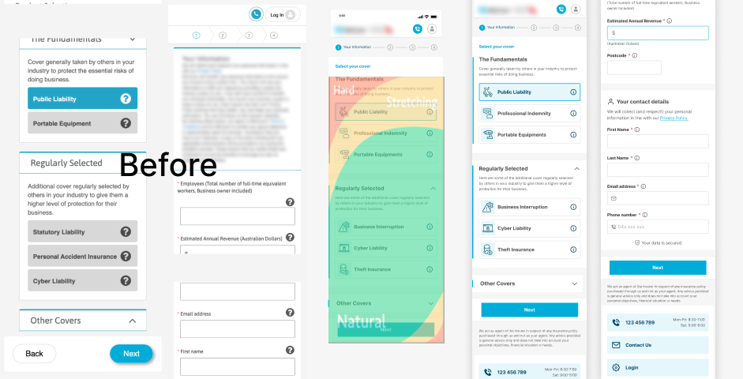
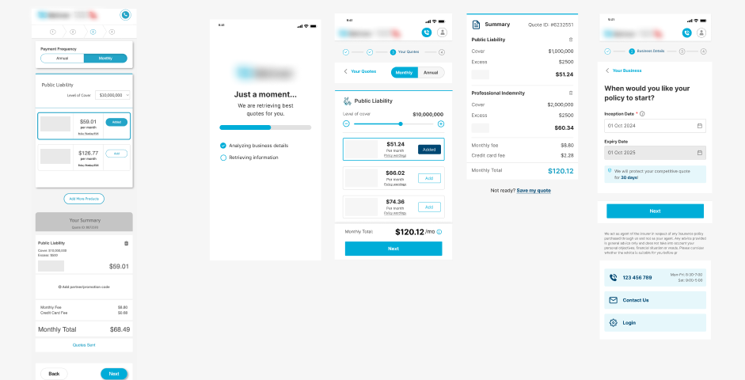
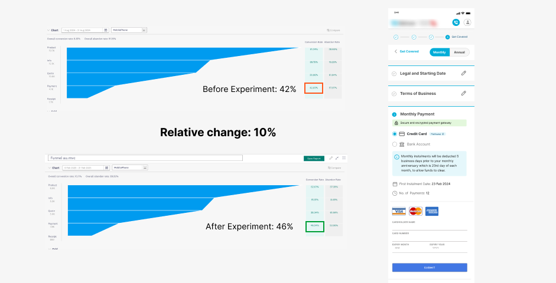
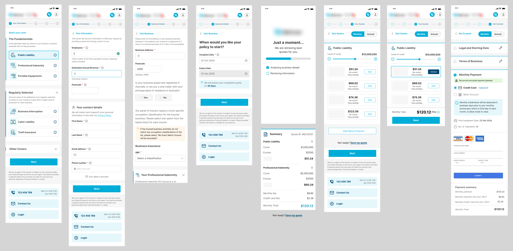

Contact
Let's work together
For new opportunities and collaborations. Feel free to reach out or just want to connect.
Optimization of insurance sales funnel for mobile users.
We optimized sales funnel for users buying small business insurance. The goal was to make the experience more intuitive and increase conversion for mobile users. We already did optimization on payment page which resulted in 10% increase in conversion. This was further optimization proposed to increase conversion on overall funnel.
My Role: I was part of the project as a Lead UX designer and was responsible for the overall UX design and strategy.


Analyzing user sessions: I went through Tealeaf live sessions to understand user behaviour while using site on mobile.
Campaign analytics data: Deep-dive into Paid campaigns data to observe user journey and drop-off steps.
Heatmaps & Eye tracking: To understand areas where user were focusing and which areas they were ignoring.
We also deep-dived into the market to understand approach of other insurance companies

Outcome of the analysis of the various data points I identified major friction points for users:

Based on our research findings, we decided to test a optmized mobile version of sales funnel.
After reviewing all the user insights, goals, site architecture, and behavioral data, I began designing high-fidelity wireframes. Every decision in the sales funnel layout was driven by data and aimed at improving the overall user experience.


To enhance the user experience and improve conversion, we redesigned the payment step by drawing insights from a previous experiment that led to a 10% increase in conversions. The key change involved breaking the long, scroll-heavy payment page into three manageable accordion-style sections.


After approval from all stakeholders design is now in development. We are expecting reduction in drop-off on all steps. We will keep monitoring the performance after the launch. We already have observed significant increase in crucial payment step. These learnings helps us in optimizing further.
For new opportunities and collaborations. Feel free to reach out or just want to connect.